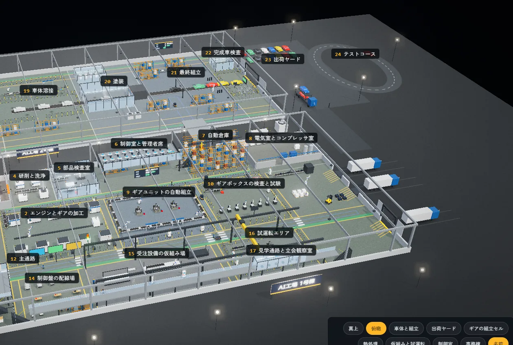
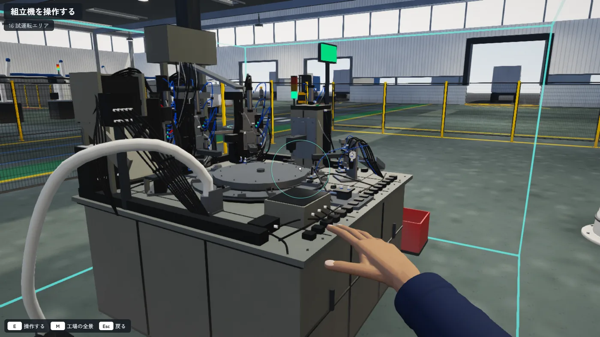
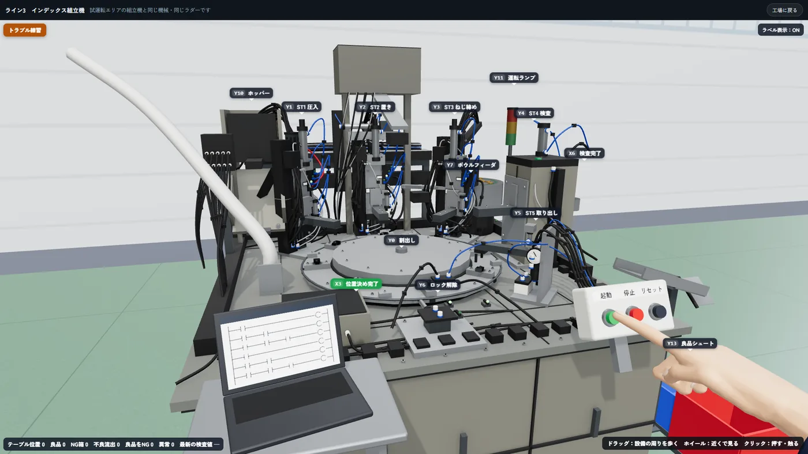
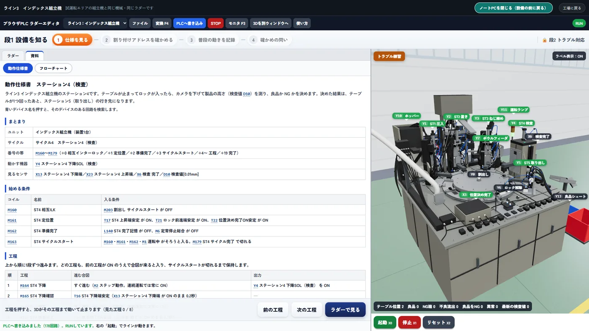

24工程の工場を歩ける
178回路のラダーで設備が動く
18問のトラブル対応の課題


01
工場に入る
試運転エリアの組立機を探します

02
自分の手で動かす
起動 停止 リセットを 自分の指で押します

03
原因を探して直す
ノートPCで仕様とラダーを見て 原因を探して直します
練習用のシミュレーターです 最後の確かめは実機で行います
解けたら 画面を #FAWorld で投稿してください
PLC のトラブルシューティングを ブラウザで体験できるシミュレーター


試運転エリアの組立機を探します

起動 停止 リセットを 自分の指で押します

ノートPCで仕様とラダーを見て 原因を探して直します
練習用のシミュレーターです 最後の確かめは実機で行います
解けたら 画面を #FAWorld で投稿してください